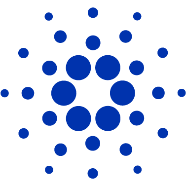

BELLADA STAKING POOL
The pool is hosted on virtual machines in several different location to ensure maximum uptime.
cardano staking pool
pool ID: 49bf4655f577872b6ad537ee60055bc07cbd039cf77646b77305c946
The pool is hosted on virtual machines in several different location to ensure maximum uptime.

We have multiple nodes set up in several locations to ensure maximum uptime.
Staking with CARDANO is safe, your funds never leave your wallet.
Our fees are low at 3% variable and 340ADA/epoch fixed fee
Staking helps to secure the CARDANO network and is passively rewarded for participation. By delegating to our stake pool you allow us to 'represent' your tokens and mint blocks on your behalf without the need to be online - we do that for you!
Cardano has launched its Shelley upgrade. From now on you are able to earn staking rewards by holding ADA cryptocurrency in your wallet. Staking ADA tokens will earn you return on investment as it helps the Cardano network to validate new blocks and keep the network and transactions secure. Rewards are paid out every “epoch” which is estimated to be roughly every five days. Great thing about staking ADA is that your wallet will have different addresses for spending and staking your coins. What that means is that you can delegate your tokens to a stake pool and they never actually leave your wallet. Your funds are under your control and are not locked which means you can still spend them at any time. This is what makes CARDANO great and sets it apart from the other tokens.
We recommend downloading the wallets from safe sources which are linked below: